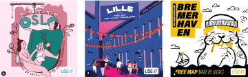

City Gem
find the gem 💎 in the city
En collaboration avec les cartes Use-it, nous vous présenterons le projet qui permettra aux jeunes voyageurs de visiter la ville comme des locaux. Vous aurez l'occasion de visiter l'ensemble des villes existantes déjà sous forme de cartes papier à commencer par Bruxelles.
Pour tout les utilisateurs qui préfèrent le format digital, tout sera désormais à portée de smartphone !
🤷♂️ qui est use-it ?
“Nous créons des cartes pour les jeunes voyageurs : faites par des locaux, actualisées, non commerciales et gratuites. Pas d'absurdité ni de publicité, juste la vraie vie de la ville.”
Nicolas, commité de direction de use-it
Ils conçoivent des cartes papiers décorées par des artistes locaux, avec des points d'intérêts identifiés par des jeunes habitants. voyageurs en quête de nouveaux endroits à visiter.

carte use-it ville
deghent
Use-it a 6 valeurs qui se corrèlent parfaitement avec celles que je cherchais à montrer dans mon projet et plus encore.
made by locals
we don't work with travel journalists but with locals.
mape are free
you find them in hostels and tourist infos.
young travelers
no 5-star hotels, no fancy dinners.
not commercial
nobody pays to be inclded on the maps.
not a trendy guide
it's about the life and soul of the city.
up-to-date
new editions are made every year.
Use-it c’est un super moyen de trouver de nouvelles choses à faire dans une ville, de trouver des endroits moins connus du grand public mais qui n’en n’a pas moins pleine d’histoire à raconter.
Pour donner vie à ce projet de plusieurs mois, il s’est passé beaucoup de choses, il y a eu des rencontres, de bons et de mauvais choix, des doutes et des succès.
retraçons ensemble toute l’épopée.
ça se passe ici !
sujetRendez-vous en 2024 pour le lancement de City Gem !
à voir aussi
Sujet
🌃 De ville en ville.
Étant très attachée à ma ville, un projet qui peut m'aider à la promouvoir et aider ceux qui aime leurs villes à pouvoir la partager aussi, c’est un sujet sur lequel j’étais sûr que j’allais pouvoir m’amuser.
J’ai grandi toute ma vie à Bruxelles et lorsque j’entends quelqu’un me dire qu’il n’aime pas cette ville, je lui réponds que c’est parce qu' il ne la connaît pas comme moi je la connais.
Une ville c’est des endroits touristiques parfois très fréquenté mais c’est aussi des endroits plus discrets dans lesquels on se sent tout aussi bien. Et ça, quand je voyage, c’est aussi ce que je recherche. j’ai eu l'occasion de visiter des dizaines de villes à travers l'Europe et le monde.
Ce sont pour toutes ces raisons que je me suis poussé à travailler sur ce sujet là.
la suite c'est ici !
rencontresrencontres
🤝 beaucoup de belles rencontres.
Des rencontres avec l’équipe de use-it d’abord. Des rencontres avec des utilisateurs surtout.
Je suis donc aller à la rencontre de personnes qui aiment voyager et découvrir pour savoir comment améliorer leurs expérience, ce qui allait ou n’allait pas dans leurs voyages. j'ai rédigé un guide d'entretien. j’ai voulu ce guide très large car je n’avais à ce stade là aucune idée de la solution finale que j’aurais pu proposer. donc j’ai finalement rencontré pas mal d’amoureux du voyage, des gens qui aiment leur ville. on à pu discuter de ce qu’ils aiment ou n’aime pas dans leurs ville, dans les villes qu’ils visitent.
Je me suis entretenu avec Nicolas qui fait partie du comité de direction de Use-it. et ils avaient aussi identifié ce problème. De leurs côtés, ils travaillaient sur une solution à peu près similaire qu’ils ont appelée Dig-it. En discutant ils se sont montrés intéressés par la vision que j’avais du projet et nous avons convenu qu'une collaboration était envisageable.
Nous pensons tous les deux que ce pourrait être très chouette de travailler ensemble
la suite c'est ici !
interetinteret
👍 un réel interet.
Aujourd’hui le média utilisé par use-it ne parle plus vraiment à ses utilisateurs. En effet ils cherchent à s’adresser à un public jeune sauf que celui-ci ne s'intéresse plus assez aux cartes papier.
couvertures des cartesuse-it
J'ai sondé de nombreux jeunes qui me disaient ne pas connaître les cartes use-it. En 2023 plus que jamais, les cartes papiers posent un souci d’écologie, l’impression en masse, les diffusions depuis l’imprimerie dans de nombreuses villes européennes se fait en camion. Le but n’étant pas de supprimer entièrement les cartes mais d’en diminuer la production pour réduire l'impact que celles-ci ont sur la planète. La diffusion de cartes papiers ne pouvant se faire que via des points de ventes, elle ne permet pas à tous de pouvoir en profiter. Tout ça je l’ai appris en discutant avec les jeunes voyageurs et Nicolas de chez use-it
Après toutes ces discussions, j’ai compris que tout comme moi les gens aimait partager, faire découvrir, épater. Les voyageurs aiment autant visiter les endroits les plus prisés de la ville que de souffler au calme à une terrasse.
C’est vraiment en échangeant avec les gens et avec Use-it avec qui j’ai eu la chance de m’entretenir un peu plus d’une heure, que j’ai pu facilement identifier les problématiques et commencer à chercher comment les résoudre .
la suite c'est ici !
fonctionalitéesfonctionalitées
🤳 ça fonctionne !
La solution c’est de créer de nouvelles cartes use-it sur internet qui soit plus interactive et qui parlerait aux jeunes à qui le format papier ne parle plus réellement. garder les valeurs des cartes d’origines et les rendre plus accessibles à un maximum de gens.
les personnes souhaitant créer leur carte avaient la mainmise totale sur la création. Sauf que dans le cas de cartes digitales, on ne va pas demander aux utilisateurs de coder eux même leurs cartes. C'est pour celà que selon moi cette fonctionnalité devrait venir plus tard dans une v2.
la suite c'est ici !
defisdefis
💪 un défi colossal.
Malgré tous ces défis, j’ai hâte de me lancer dans la réalisation de ce projet. je suis sur qu’il sera pour moi un grand pas en avant pour ma carrière, que ce soit en travaillant avec use-it, en découvrant de nouvelles techniques ou en travaillant au plus proches des utilisateurs.
il y a pas mal d'interrogations qu’il me reste à ce stade-ci. des interrogations techniques comme par exemple quant aux map vectoriel que je devrai intégrer. Dans City Gem, je ne peux pas me permettre de reprendre une carte neutre comme celle de google ou waze. il faut une carte décorer, une carte personnalisée par un artiste locale, une carte aussi intéractive.
Les locaux seront l'intérêt principal de l’application et c’est une chose qu’il faudra garder en tête durant toute la conception de l’application.
c'est finit, tu peux relire ici !
home